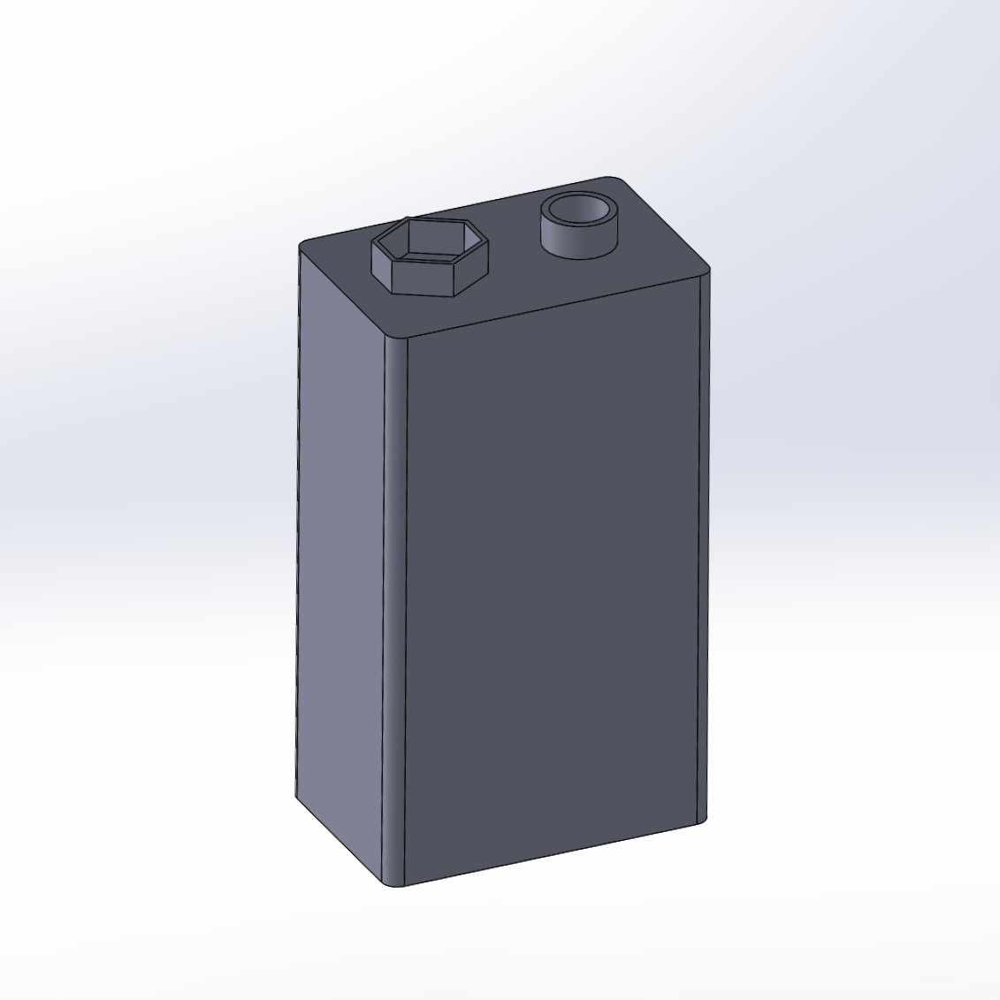
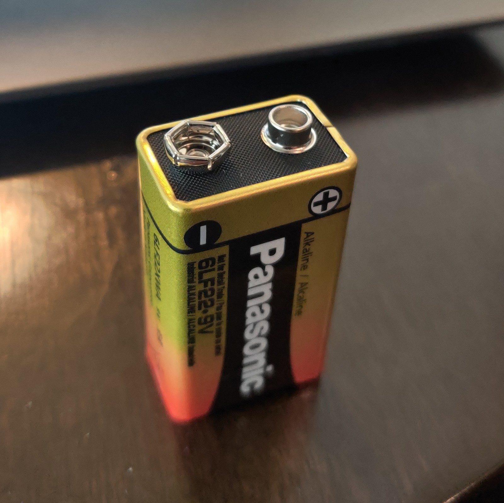
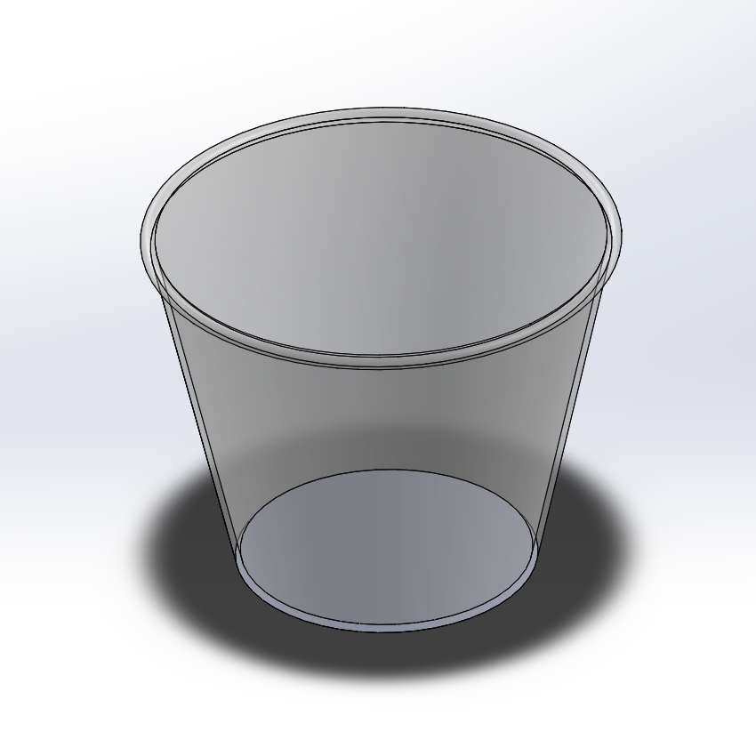
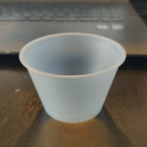
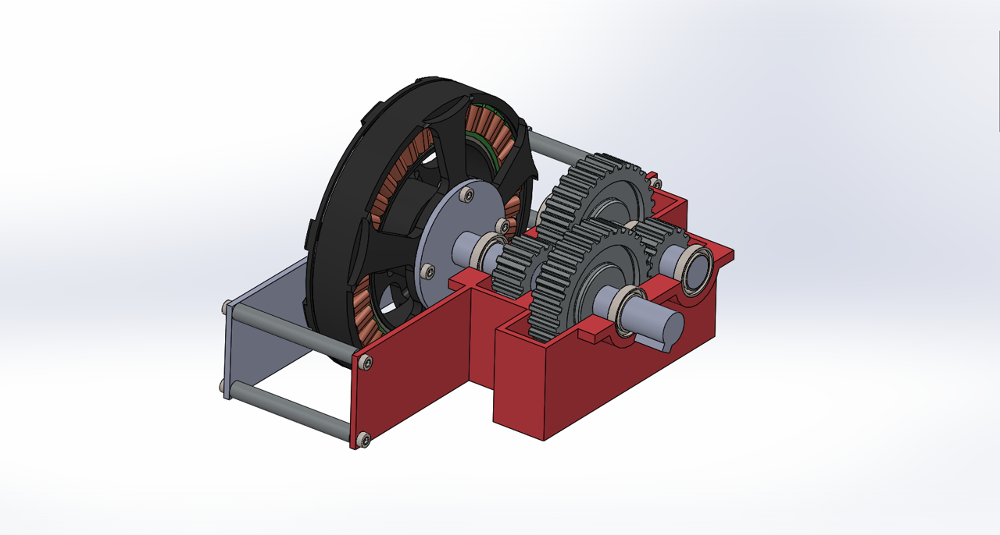
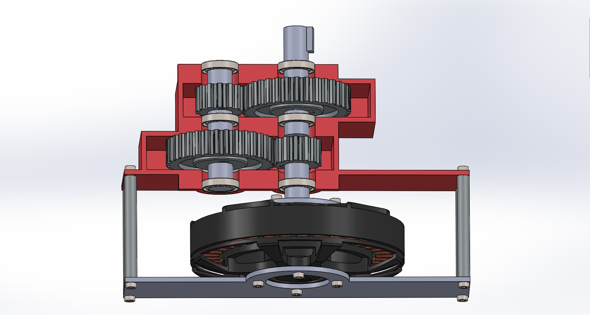

This week we focused on working with CAD and creating 3D models of various components in the kit. I decided to use with Solidworks which I have the most experience with from various previous projects. I have tried to work with Fusion 360 in the past but for some reason it rarely propery installed, and even once set up it didnt have as many features as I'd like.
The first part I modeled was a 9V battery from the kit. For this part I sketched the base of the battery, did an extruded boss on it to the measured height of the battery, and then did a second sketch that I extruded to create the electrodes of the battery.
 
The second part I modeled was a cup from the kit. For this I simply created a sketch of half of the cross section of the cup and did a revolve boss around the center of the cup.


For the assembly, I decided to create a gearbox for a T-MOTOR U8, which is a motor commonly used for drones. This has a practical application namely that there are many very high quality and high power drone motors that spin too fast to have applications for robotics. For this reason you want to gear down the motor, and allow it to have higher torque for more use cases. The model for the motor was taken from online, and the rest of the components were I made. Video of gearbox here.

